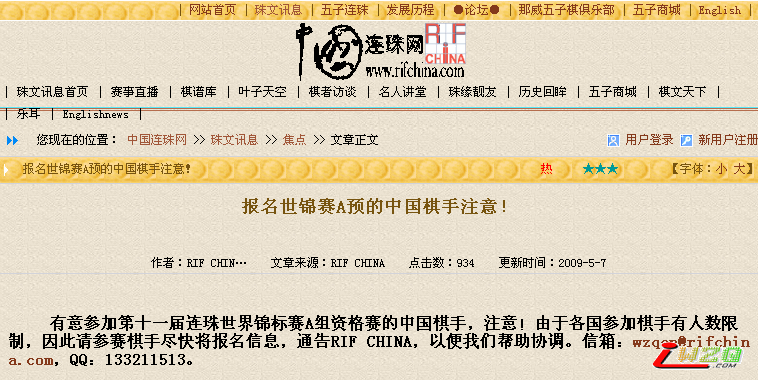
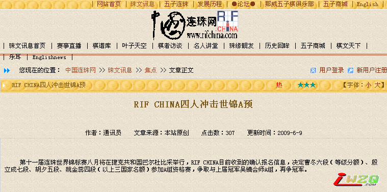
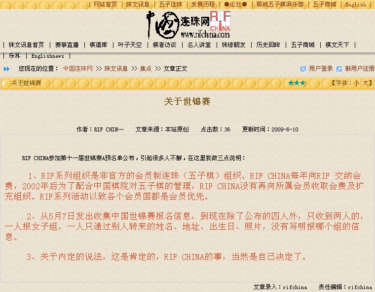

我无语了。。。。。。。
#1 我无语了。。。。。。。 作者：棋情 发表时间：2009-6-9 17:15:04
今天看到世锦赛国内参赛名单的帖子，让我感觉到非常的纳闷，为什么？？？？我数天前就已经把我本人的报名材料交给了老姚，他也确认收到了我的报名信息，然而现在却突然出现了这样的一个名单？？？？我对此感觉到非常的疑惑和不解。我记得前段时间，看到中国连珠网发过这样一条信息"有意参加第十一届连珠世界锦标赛A组资格赛的中国棋手，注意！由于各国参加棋手有人数限制，因此请参赛棋手尽快将报名信息，通告RIF CHINA，以便我们帮助协调。" 我现在只想问，你们说的协调到底是怎么协调的，在你们把参赛名单发出来之前，我没有收到任何协调的信息。。直到现在我都一无所知。。。按道理，如果报名人数多于国家预定名额，应该组织一次国内选拔，来确定最终参赛的人员。。可是我没有得到任何关于这类的信息。。。我不知道你们的这份名单是怎么报出来的，我希望能给我一个合理的解释。。。这次比赛最初的翻译工作是我的朋友KOF明子一直帮忙翻译！为了这次比赛，我们忙了大半年，最后自己却无法参加比赛，感觉自己现在非常的郁闷和不解。。。除曹东大鱼之外，我不知道其他三个人的名额是怎么定的。。。。。。选拔了吗？？？？？？？？？？？
“预祝中国参赛选手都能取得好成绩！希望曹东能够发挥稳定，不要受心态因素影响。殷老师要自己打出好成绩，还要照顾好队伍，真的很辛苦。希望这次我们有3名棋手会师A组。这次比赛占用时间很长，加上预选赛需要半个多月的时间，时间和费用问题造成很多优秀棋手不能参赛，实在很遗憾。我想如果参赛的总人数超过A预的名额的话，会有很好的办法决定由哪位棋手参加A预的。大家期待你们的精彩表演！”中国连珠网陈伟老师的话。我看陈老师应该不知道这个名单是怎么出来的吧？我自己老早就报了名，而且报名材料已经被北京确认收到，最后名单出来的时候，我都一无所知。。。。没收到任何的选拔和协调的信息。。。
世锦赛报名截至日期是15号。现在才9号。。。。报名还没截止，北京这么快就把名单发了出来，不知道是什么意思。。。
［ oddgod 于 2009-6-10 15:20:44 时花20金币送鲜花一朵］
［ 梦婷 于 2009-6-10 18:32:27 时花20金币送鲜花一朵］
［ 梦婷 于 2009-6-11 9:13:17 时花20金币送鲜花一朵］
［ 梦婷 于 2009-6-11 9:13:25 时花20金币送鲜花一朵］
#2 Re:我无语了。。。。。。。 作者：不知 发表时间：2009-6-9 17:16:47
 棋情呐喊了...此帖必火..留名沙发
棋情呐喊了...此帖必火..留名沙发
#3 Re:我无语了。。。。。。。 作者：岳麓小棋皇 发表时间：2009-6-9 17:16:57
看来RIFCHINA这关不好过了....
#4 Re:我无语了。。。。。。。 作者：游戏人间 发表时间：2009-6-9 17:17:12
 飘过
飘过
#5 Re:我无语了。。。。。。。 作者：越狱行辕 发表时间：2009-6-9 17:19:04
郁闷，本来以为我师傅能去呢。第一个去世锦赛的网络棋手。结果搞出这么个事。
太黑暗了
#6 Re:我无语了。。。。。。。 作者：失落刀 发表时间：2009-6-9 17:19:13
这几个帖子合并在一起就好了，整个专贴，总置顶。
#7 Re:我无语了。。。。。。。 作者：游戏人间 发表时间：2009-6-9 17:19:41
这个算事件了吗？#8 Re:我无语了。。。。。。。 作者：忧郁的双眼 发表时间：2009-6-9 17:20:11
忍术：围观之术！
支持情猪，要一个合理的解释。
#9 Re:我无语了。。。。。。。 作者：游戏人间 发表时间：2009-6-9 17:20:34
我估计可能是RIFCHINA发新闻的时候发错了。可能是说那姚金蕊和胡夕是打女子组。不然这个事情就有点值得玩味了。#10 Re:我无语了。。。。。。。 作者：无尽 发表时间：2009-6-9 17:22:24
我一开始也这样想，但写明是冲A的。。。#11 Re:我无语了。。。。。。。 作者：棋情 发表时间：2009-6-9 17:22:25
除曹东大鱼之外，我不知道其他三个人的名额是怎么定的。。。。。。选拔了吗？？？？
#12 Re:我无语了。。。。。。。 作者：Solmyr 发表时间：2009-6-9 17:22:38
 我还在纳闷咋全是北京内部人员呢~俩小丫头去了~你和小天哥咋没名额呢？！强烈怀疑IFCCHINA某人......
我还在纳闷咋全是北京内部人员呢~俩小丫头去了~你和小天哥咋没名额呢？！强烈怀疑IFCCHINA某人......
#13 Re:我无语了。。。。。。。 作者：蛋老师 发表时间：2009-6-9 17:24:24
全是北京的哦#14 Re:我无语了。。。。。。。 作者：不知 发表时间：2009-6-9 17:24:34
这次必需支持棋情小天..比赛最少要有个选拔赛出来..
如果棋情小天输了我没话说..但如果没输请RC给个合理的解释..
#15 Re:我无语了。。。。。。。 作者：Solmyr 发表时间：2009-6-9 17:24:45
放心！必须没选拔~而且不是老殷都不想下五子棋了么？他现在一直在下围棋啊！！！
#16 Re:我无语了。。。。。。。 作者：游戏人间 发表时间：2009-6-9 17:25:02
智运会年的世锦赛注定是各地棋手锻炼的大好机会。如果成了某一地的自留地的话恐怕不是很好的。希望如我所想是当时发文章的时候发错了。毕竟RIFCHINA工作也比较多。可能搞混了。也许是说的RIFCHINA本身派出的选手。#17 Re:我无语了。。。。。。。 作者：我是大白痴 发表时间：2009-6-9 17:25:48
顶 支持猪
#18 Re:我无语了。。。。。。。 作者：Solmyr 发表时间：2009-6-9 17:25:51
再次狂寒老姚的举动！！！！！！
#19 Re:我无语了。。。。。。。 作者：非鸟 发表时间：2009-6-9 17:28:15
必须给出合理解释，必须公平公正，杜绝这样的丑闻发生，简直令国内五子棋爱好者难以接受
#20 Re:我无语了。。。。。。。 作者：Solmyr 发表时间：2009-6-9 17:29:03
 支持死鸟！俺在北京支持你！虽然最近搞四级不下棋了~
支持死鸟！俺在北京支持你！虽然最近搞四级不下棋了~
#21 Re:我无语了。。。。。。。 作者：珠为君连 发表时间：2009-6-9 17:30:57
估计要是大鱼没拿过世界冠军，名额就全是北京的了［ 游戏人间 于 2009-6-9 18:07:22 时奖励此帖[金币加 20 威望加1］因为你威望为0.所以奖励一个
#22 Re:我无语了。。。。。。。 作者：刀魂 发表时间：2009-6-9 17:31:51
我只能默默地围观 lz 了
#23 Re:我无语了。。。。。。。 作者：陨落之城 发表时间：2009-6-9 17:31:59
这个事啊，得给偶们明确解释嘛···
#24 Re:我无语了。。。。。。。 作者：有志青年 发表时间：2009-6-9 17:36:38
继续关注中！#25 Re:我无语了。。。。。。。 作者：Solmyr 发表时间：2009-6-9 17:37:25
 再次强烈申讨一下老姚~~~~~~~~~~~~~~~~
再次强烈申讨一下老姚~~~~~~~~~~~~~~~~
#26 Re:我无语了。。。。。。。 作者：不知 发表时间：2009-6-9 17:38:45
 有志出现了..围观..有志表个态哈~别中立
有志出现了..围观..有志表个态哈~别中立［ 二十七刀 于 2009-6-9 17:46:41 时花20金币送鲜花一朵］
#27 Re:我无语了。。。。。。。 作者：堂堂 发表时间：2009-6-9 17:44:00
北京公布的名单的确让人值得怀疑，黑箱操作
#28 Re:我无语了。。。。。。。 作者：越狱行辕 发表时间：2009-6-9 17:47:37
晕死#29 Re:我无语了。。。。。。。 作者：神龙 发表时间：2009-6-9 17:50:30
#30 Re:Re:我无语了。。。。。。。 作者：菜包先生 发表时间：2009-6-9 17:52:50
难道，，,尊敬的,对中国五子棋做出过重大贡献的,万人仰敬的开山鼻祖那威老师,会做出如此恶心的事?应该不能可吧,应该是搞错了.别人棋情和小天找赞助,办签证,护照,都准备一年了,好不容易搞定了,我想那威老师不会这么没良心的...#31 Re:我无语了。。。。。。。 作者：米粒 发表时间：2009-6-9 17:55:20
支持棋情老师...#32 Re:Re:我无语了。。。。。。。 作者：小红眼镜 发表时间：2009-6-9 17:55:23
引用：是那威搞的...老姚还没那个权利和魄力
原文由 Solmyr 发表于 2009-6-9 17:37:25 :
#33 Re:我无语了。。。。。。。 作者：小红眼镜 发表时间：2009-6-9 17:55:57
支持棋情 鄙视暗箱操作
鄙视暗箱操作
#34 Re:Re:我无语了。。。。。。。 作者：Solmyr 发表时间：2009-6-9 17:57:34
引用：
原文由 小红眼镜 发表于 2009-6-9 17:55:57 :
支持棋情
完了！连北京的铁杆棋手都这么BS那威了~这事情一定要大肆宣扬出去！！！太黑暗太过分了！
#35 Re:我无语了。。。。。。。 作者：如歌岁月 发表时间：2009-6-9 17:58:24
小雨师傅来让我顶
听师傅的话
#36 Re:Re:Re:我无语了。。。。。。。 作者：小红眼镜 发表时间：2009-6-9 17:58:37
引用：对事不对人，这次的事件本来就是相当不对！！！
原文由 Solmyr 发表于 2009-6-9 17:57:34 :引用：
原文由 小红眼镜 发表于 2009-6-9 17:55:57 :
支持棋情

#37 Re:我无语了。。。。。。。 作者：忧郁的双眼 发表时间：2009-6-9 17:59:23
小曾同学很血性嘛！
小沈MM，也很激情！
#38 Re:Re:Re:Re:我无语了。。。。。。。 作者：Solmyr 发表时间：2009-6-9 18:01:06
引用：罢了罢了！RIF亚洲主席那威能做出这种事情来~难怪中国棋院一直不承认五子棋国际组织RIF呢！所有的人过来围观啊！强烈BS谴责下这事！！！
原文由 小红眼镜 发表于 2009-6-9 17:58:37 :引用：对事不对人，这次的事件本来就是相当不对！！！
原文由 Solmyr 发表于 2009-6-9 17:57:34 :引用：
原文由 小红眼镜 发表于 2009-6-9 17:55:57 :
支持棋情
#39 Re:我无语了。。。。。。。 作者：我是大白痴 发表时间：2009-6-9 18:03:18
BS 不公平#40 Re:我无语了。。。。。。。 作者：不知 发表时间：2009-6-9 18:03:30
目前RC官方情绪保持稳定..相当的稳定..
#41 Re:我无语了。。。。。。。 作者：炫飞冰弦 发表时间：2009-6-9 18:04:11
……不能这么罢了吧？至少要给大家个说法啊
#42 Re:我无语了。。。。。。。 作者：淡上轻愁 发表时间：2009-6-9 18:04:21
支持棋情老师，要一个合理的解释！［ 失落刀 于 2009-6-9 18:06:12 时奖励此帖[金币加 20 威望加1］你威望0，因此赠送威望。
#43 Re:我无语了。。。。。。。 作者：厦门小天 发表时间：2009-6-9 18:08:20
应该发错了，两个女的应该参加WT。 这报名都跟大鱼棋情搞了半年多…
这报名都跟大鱼棋情搞了半年多…
#44 Re:我无语了。。。。。。。 作者：棋情 发表时间：2009-6-9 18:10:05
“预祝中国参赛选手都能取得好成绩！希望曹东能够发挥稳定，不要受心态因素影响。殷老师要自己打出好成绩，还要照顾好队伍，真的很辛苦。希望这次我们有3名棋手会师A组。这次比赛占用时间很长，加上预选赛需要半个多月的时间，时间和费用问题造成很多优秀棋手不能参赛，实在很遗憾。我想如果参赛的总人数超过A预的名额的话，会有很好的办法决定由哪位棋手参加A预的。大家期待你们的精彩表演！”中国连珠网陈伟老师的话。我看陈老师应该不知道这个名单是怎么出来的吧？我自己老早就报了名，而且报名材料已经被北京确认收到，最后名单出来的时候，我都一无所知。。。。没收到任何的选拔和协调的信息。。。#45 Re:我无语了。。。。。。。 作者：失落刀 发表时间：2009-6-9 18:10:44
RIFchina可能发错了，关注进一步消息。#46 Re:我无语了。。。。。。。 作者：五林外传 发表时间：2009-6-9 18:12:09
多沟通沟通，发帖也不知道实情，发牢骚也解决不了问题。
#47 Re:我无语了。。。。。。。 作者：不知 发表时间：2009-6-9 18:14:40
 冲A..四人..好象发得很不错啊..
冲A..四人..好象发得很不错啊..
连这都会搞错..笔者的语文水平我相当的质疑..
这次报名的人那么多..连个选拔赛都没有..说得过去吗?
引用:RIF CHINA目前收到的确认报名信息
引用:决定曹冬六段（等级分额）、殷立成七段、胡夕五段、姚金蕊四段（以上三国家名额）参加A组资格赛
引用:争取与上届冠军吴镝会师A组，再争冠军
一句已确认.一句已决定.还有最后指名是A组..
#48 Re:我无语了。。。。。。。 作者：紫木 发表时间：2009-6-9 18:16:28
是不是老姚大意了，工作失误，情有可原！#49 Re:我无语了。。。。。。。 作者：南京小飞机 发表时间：2009-6-9 18:17:01
**************
*****************
*************
兄弟们扛着锄头 拎着菜刀跟我走
#50 Re:我无语了。。。。。。。 作者：厦门小天 发表时间：2009-6-9 18:19:00
-_-|| 我英语补了快2个月了，连那边饮食习惯都摸了个半透，另一边还跟福建体育局谈呢，现在搞得…… 那郁闷！！［ 二十七刀 于 2009-6-9 18:31:02 时花20金币送鲜花一朵］
［ 流逝 于 2009-6-9 19:12:28 时花20金币送鲜花一朵］
［ 梦婷 于 2009-6-10 19:49:06 时花20金币送鲜花一朵］
#51 Re:我无语了。。。。。。。 作者：流逝 发表时间：2009-6-9 18:21:20
。。。。。。。。。期待看到一个好的结果~
#52 Re:我无语了。。。。。。。 作者：歇菜了 发表时间：2009-6-9 18:22:54
 顶棋情大师小天大师
顶棋情大师小天大师
阿弥陀佛,善哉善哉
#53 Re:我无语了。。。。。。。 作者：不知 发表时间：2009-6-9 18:24:02
看了棋情发的陈伟老师的回话.
引用:“预祝中国参赛选手都能取得好成绩！希望曹东能够发挥稳定，不要受心态因素影响。殷老师要自己打出好成绩，还要照顾好队伍，真的很辛苦。希望这次我们有3名棋手会师A组。
那很明显就是知道其它两人是没希望去锻炼的了?
引用:这次比赛占用时间很长，加上预选赛需要半个多月的时间，时间和费用问题造成很多优秀棋手不能参赛，实在很遗憾。
棋情小天不是报名了吗?我记得他们说过他们自费去..
引用:我想如果参赛的总人数超过A预的名额的话，会有很好的办法决定由哪位棋手参加A预的。大家期待你们的精彩表演！”
报名总人数绝对超过A预名额了..问下那个很好的办法是什么办法?没见出台方案哦..我只见了棋手名单..
#54 Re:我无语了。。。。。。。 作者：我是大白痴 发表时间：2009-6-9 18:24:06
中国的国情就是这样 无奈啊
#55 Re:我无语了。。。。。。。 作者：岳麓小棋后 发表时间：2009-6-9 18:26:36
淡定。。。淡定。。。
另外弱弱问下，RIF CHINA 和中国棋院到底是什么关系？
#56 Re:我无语了。。。。。。。 作者：极地剑客 发表时间：2009-6-9 18:27:35
申明:我是不明真相的群众,什么也不懂~完全不知道自己在干什么说什么~~~~~~~~~只是路过~暴力围观一下~~~~~~~~#57 Re:Re:我无语了。。。。。。。 作者：菜包先生 发表时间：2009-6-9 18:29:11
看来五子棋界最无耻的寒岁三友,得换人了...#58 Re:我无语了。。。。。。。 作者：暗夜里的巡航炮 发表时间：2009-6-9 18:29:45
顶一个，然后潜水#59 Re:我无语了。。。。。。。 作者：遥之来者无界 发表时间：2009-6-9 18:30:33
的确够无语……
#60 Re:我无语了。。。。。。。 作者：浩瀚铭剑 发表时间：2009-6-9 18:31:10
支持棋情老大
#61 Re:我无语了。。。。。。。 作者：岳麓小棋后 发表时间：2009-6-9 18:32:38
歌星集体联合要向卡拉OK厅要歌曲版权费用，卡拉OK厅们也联合起来商量，家家都卖穷，生意不景气，某高人语：当你们生意差的时候，希望歌星和你们一起分担风险，当你们生意好的时候，怎么没想到和歌星一起分享利益呢？#62 Re:我无语了。。。。。。。 作者：极地剑客 发表时间：2009-6-9 18:38:17
本来我是想不通的~可是一想想我是生活在CN~一切也就释然了~~~~~``#63 Re:我无语了。。。。。。。 作者：惊弓之菜鸟 发表时间：2009-6-9 18:43:26
支持棋情大师小天大师
［ 游戏人间 于 2009-6-9 18:44:09 时奖励此帖[金币加 20 威望加1］赠送1威望~
#64 Re:我无语了。。。。。。。 作者：人比黄花瘦 发表时间：2009-6-9 18:48:14
支持棋情老师，强烈要求还五子棋坛以清白颜色！！！#65 Re:我无语了。。。。。。。 作者：不知 发表时间：2009-6-9 18:52:40
群众很激动.官方很淡定.
一旦截止.说啥都是个屁(不讲粗话都不得了)
今天9号.看着吧.还有六天.
别说写错了.过了多少个小时了.官方无任何人出来改消息.
能联系上官方的朋友帮个忙.否则棋情小天算是冤了.
#66 Re:我无语了。。。。。。。 作者：南京小飞机 发表时间：2009-6-9 18:54:58
个人名义自费去可以不 然后想办法找赞助
#67 Re:我无语了。。。。。。。 作者：不知 发表时间：2009-6-9 18:57:47
原来五子棋真的是黑白二色的啊...
一个棋盘..双色棋子..
中国的棋民白白被官方黑了..
#68 Re:我无语了。。。。。。。 作者：逆刃 发表时间：2009-6-9 19:04:22
一定要看到解释，希望仅仅是由于是文字输入工作的失误。
#69 Re:我无语了。。。。。。。 作者：魂之利刃 发表时间：2009-6-9 19:10:29
无语，怎么变成这样了
#70 Re:我无语了。。。。。。。 作者：天星斗 发表时间：2009-6-9 19:17:58
支持棋情大师小天大师
［ 无尽 于 2009-6-9 19:18:27 时奖励此帖[金币加 20 威望加1］
0威望+1
#71 Re:我无语了。。。。。。。 作者：没事摆石子玩 发表时间：2009-6-9 19:20:20
应该选拔的. 一定会有说法的 相信公道自在大家心中 祝福小天取得好成绩
#72 Re:我无语了。。。。。。。 作者：唐门小虎 发表时间：2009-6-9 19:23:28
喔 呵呵呵 ，不公平啊 ，是不是搞个人主义啊
，是不是搞个人主义啊［ 逆刃 于 2009-6-9 19:26:40 时奖励此帖[金币加 20 威望加1］
#73 Re:我无语了。。。。。。。 作者：小红眼镜 发表时间：2009-6-9 19:26:37
有志大大说：此“国家名单”是RIFchina组织报名的吧，本身这个比赛就是rif组织机构组织的。
所以没有啥黑幕。
似乎道理上是这样的，但是真的觉得对其他棋手不公平....
#74 Re:我无语了。。。。。。。 作者：六指琴魔 发表时间：2009-6-9 19:28:25
希望能给广大棋迷一个满意的回复 支持棋情
［ 有志青年 于 2009-6-9 20:17:32 时奖励此帖[金币加 20 威望加1］
#75 Re:我无语了。。。。。。。 作者：启蒙 发表时间：2009-6-9 19:32:07
这个事如真像表面看起来那样就太。。了
我觉得还是先等等，再问一下具体情况，我们论坛不是很多北京的同志么，发挥一下地域优势，帮大家打听一下啊！
#76 Re:我无语了。。。。。。。 作者：雪飞 发表时间：2009-6-9 19:32:56
看到这个结果，粗略查了一下资料，先说说参赛的资格，这个是官方的资料，翻译可能有误，见谅。
A组参赛资格 [AT] （原文：http://www.piskvorky.cz/wc/system-rules/renju-tournament/）
共12个位子
1个个人名额：中国吴镝
6个固定名额：其中俄罗斯3个，爱沙尼亚2个，日本1个
5个资格赛名额：资格赛前5名
资格赛参赛资格 [QT] （原文：http://www.piskvorky.cz/wc/system-rules/renju-qualification-tournament/）
1、每一个RIF成员国有3个名额，俄罗斯、爱沙尼亚和日本因在A组有固定名额，故资格赛名额分别是0、1和2个。
2、非RIF成员国有一个名额，如果A组已经名额则不再有QT名额。
3、B组公开赛前3名自动获得个人参赛名额，分别是：Kamo Yuki (日本), Lin Huang-yu (中国台湾), Serdyukov Egor (俄罗斯)
4、上一届的A组参赛选手自动获得Q组参赛名额，他们是：Chingin Konstantin (Russia), Yamaguchi Yusui (Japan), Sushkov Vladimír (Russia), Purk Andry (Estonia), Taimla Tunnet (Estonia), Savrasova Yulia (Russia), Karlsson Stefan (Sweden), Okabe Hiroshi (Japan), Kozhin Mikhail (Russia), Iio Yoshihiro (Japan), Oll Aivo (Estonia)
5、RIF排名[09年5月15日]前20，且有效对局至少10局[07年5月16～09年5月15]，自动获得参赛名额，
6、如果参赛人数是奇数，举办国可以余外增加一个名额以凑成偶数。
B组参赛资格：[BT]
任何人
女子组参赛资格：[WT]
1、成员国5个名额，非成员国1个名额
2、上届冠军有一个个人名额，是Krayeva Tatyana (俄罗斯)
看完参赛资格，分析下中国的参赛名额：
1、吴镝是上届冠军获得A组个人名额
2、资格赛，中国是RIF成员国，有3个名额
3、资格赛，上届B组无人进入前三，没有额外名额
4、资格赛，截至09年5月15日RIF排名前20，吴镝排11，曹冬排16，但不清楚曹冬的有效对局是多少，故不能确定是否自动获得1个额外名额。
5、女子组比赛：中国是RIF成员国，有5个名额
综上：中国A组有一个名额，资格赛有4或3个名额，女子组有5个名额。
接着说一下北京的参赛名单：曹冬六段（等级分额）、殷立成七段、胡夕五段、姚金蕊四段。
曹冬可能占额外名额，另外三人应该占了资格赛的3个国家名额[见原新闻]。可能也会参加女子组比赛，但我的理解是一定参加资格赛。
接着说说我个人对这件事的看法，来分析下为什么会出现这个名单?
1、五子棋世锦赛是国际连珠连盟[RIF]举办的，RIF组织有不少成员国，其中“RIF中国”是北京的那威老师在组织。
2、RIF中国在国内貌似并没有得到官方的认可，有点民间的味道，当然现在是啥情况不甚了解。在我国的官方组织是中国棋院。
3、真是因为这个，国内很多地区的五子棋组织，并不认可“RIF中国”，现在的进展如何，我也不甚清楚，至少以前是这样。
4、不认可意味着不团结，就会有分裂，没有一个统一的组织。
5、而五子棋世锦赛报名又要通过“RIF中国”，这就产生了矛盾。什么比赛算是国内的选拔赛呢？选拔的标准又是什么呢？因为没有统一的组织，所以就没有统一的章程，很多事情办起来就不合拍。
6、“RIF中国”可能会想，既然不认可我，可我有生杀予夺大权，我来说了算吧。
7、财力限制。
8、在有些人眼中，这是不公平的。
9、有办法解决这种现状吗？应该有，但是很难。中国五子棋界一定要改革，但改革就会牵扯到地方、个人利益，牵一发，而动全身，谈何容易？
10、五子棋的行棋讲究进退之道，而做人、做事又何尝不是如此呢？衷心祝愿中国五子棋界能够团结起来，成立统一联盟，如此，中国五子棋会有更大发展！
一家之言，欢迎讨论。
［ 有志青年 于 2009-6-9 20:18:45 时奖励此帖[金币加 20 威望加1］
［ 二十七刀 于 2009-6-10 18:03:41 时花20金币送鲜花一朵］
#77 Re:Re:我无语了。。。。。。。 作者：无尽 发表时间：2009-6-9 19:33:09
引用：
原文由 小红眼镜 发表于 2009-6-9 19:26:37 :
有志大大说：此“国家名单”是RIFchina组织报名的吧，本身这个比赛就是rif组织机构组织的。
所以没有啥黑幕。
既然是公开报名的（中国连珠网发过这样一条信息"有意参加第十一届连珠世界锦标赛A组资格赛的中国棋手，注意！由于各国参加棋手有人数限制，因此请参赛棋手尽快将报名信息，通告RIF CHINA，以便我们帮助协调。"），报了名却无缘无故没资格也没说法，很奇怪吧，还不是黑幕？道理和情理都说不过去。
#78 Re:我无语了。。。。。。。 作者：最爱铁观音 发表时间：2009-6-9 19:33:12
希望有关人员能给出一个让棋情老师、让广大棋迷满意的交代。。。#79 Re:我无语了。。。。。。。 作者：无尽 发表时间：2009-6-9 19:35:29
雪飞大大翻译时候漏掉最关键的部分，关于等级分的：
all the players from special RIF Top 20 list can take part in QT, that is created on May 15 of WC year from the players who have played at least 10 games during the period of May 16 of two years ago – May 15 of WC year
曹冬也不符合资格，RIF官方给出的20人名单里面也没有，担心ing……
#80 Re:我无语了。。。。。。。 作者：潇洒 发表时间：2009-6-9 19:37:19
确实很无语，希望有关人士能给个满意的解释。
#81 Re:Re:我无语了。。。。。。。 作者：雪飞 发表时间：2009-6-9 19:38:54
引用：我不是很清楚曹冬的有效对局是多少？还没注意到RIF官方的名单
原文由 无尽 发表于 2009-6-9 19:35:29 :雪飞大大翻译时候漏掉最关键的部分，关于等级分的：
all the players from special RIF Top 20 list can take part in QT, that is created on May 15 of WC year from the players who have played at least 10 games during the period of May 16 of two years ago – May 15 of WC year
曹冬也不符合资格，RIF官方给出的20人名单里面也没有，担心ing……
#82 Re:我无语了。。。。。。。 作者：无尽 发表时间：2009-6-9 19:40:19
为0 名单我已经发过1、2天了 在本版可以查看#83 Re:我无语了。。。。。。。 作者：无尽 发表时间：2009-6-9 19:42:20
对rifchina的沟通协调工作感到担忧……#84 Re:Re:我无语了。。。。。。。 作者：最爱铁观音 发表时间：2009-6-9 19:46:13
引用：
原文由 不知 发表于 2009-6-9 18:57:47 :原来五子棋真的是黑白二色的啊...
一个棋盘..双色棋子..
中国的棋民白白被官方黑了..
［ 雨一直下 于 2009-6-9 21:01:35 时奖励此帖[金币加 20 威望加1］威望为0，故加1威望
#85 Re:我无语了。。。。。。。 作者：厦门小天 发表时间：2009-6-9 19:50:33
棋情报名表都递上去了！大鱼之前也打电话说过的啊！
#86 Re:我无语了。。。。。。。 作者：茗弈風雲 发表时间：2009-6-9 19:55:08
顶了
棋情
#87 Re:我无语了。。。。。。。 作者：人比黄花瘦 发表时间：2009-6-9 19:55:18
希望中国的五子棋不要像中国足球以黑哨出名一样，也以黑幕闻名吧！
#88 Re:我无语了。。。。。。。 作者：aabb 发表时间：2009-6-9 19:57:11
啊。。如此强帖居然只能插入前十页。。。
文字录入错误无论如何都说不过去。。
这么多人义愤填膺，怎么没人去联系RC找个说法？
#89 Re:我无语了。。。。。。。 作者：无尽 发表时间：2009-6-9 20:01:36
一般人不知道具体细节，怎么讨说法？这需要当事人去做，听说大鱼打过电话了？
大家只有通过舆论表达“感想”了~ 这本身也是一种无形压力
的确大权不在我们手里 但他们得到的只是短暂的（还未必有所得） 失去的却是长久的
#90 Re:我无语了。。。。。。。 作者：dyccj 发表时间：2009-6-9 20:03:41
很有中国特色
#91 Re:我无语了。。。。。。。 作者：隐藏菜系 发表时间：2009-6-9 20:25:15
一边倒。。。我觉得现在的关键是利用仅剩的5天确定网站上公布的信息的真实性，假如是真的，我想既然rifchina已经做出决定那么更改是很困难的，因为换掉谁都不好办。。。到时众兄弟再围攻不迟。。如果是有误信息，那及时更改也不迟，现在的火力也许会降低了人家的工作积极性呢。。嘿嘿。。和谐和谐。。支持棋情，小天LS
#92 Re:我无语了。。。。。。。 作者：有志青年 发表时间：2009-6-9 20:30:57
跟进到这里，算是看明白了
吴镝老师是不需要此次rifchina给名额的，而中国另外还有3-4个名额（没有统一的说法），曹冬老师因为原先在rif是有排名的，但此次能否使用积分还是未知数。
小天老师和棋情老师是主动报名了的，我的理解，好像还不需要那威大大提供啥赞助之类的吧。
但现在的名单中没有小天老师和棋情老师的名字。
此次所谓的世锦赛是rif民间团体组织的世界杯比赛，国内的分支机构为rifchina，此机构和那威五子棋俱乐部是一套班子两块牌子。
不知道rifchina在国内民政部门和体育部门注册过吗？如果没有，那本身就是一个子虚乌有的自定义组织，所以出现这样的结果，你找谁理论呢？
此次出去比赛是代表rifchina去的，所以，让谁去，呵呵，rifchina说了算！
我们这样理解这件事情
rif相当于 全国五子棋网络社团联合会
rifchina相对于xx社团
现在rif组织全国五子棋网络社团锦标赛，简称全国锦标赛
xx社团组织公开报名，小天和棋情也报名了，xx社团也确认收到了他们的报名信息
比赛即将开始，确认名单的时候小天和棋情不在其内
理由很简单，因为你们两个不是我们社团的人呀，呵呵，瞎猜的。
以上文字仅代表我个人理解
［ 游戏人间 于 2009-6-9 20:34:31 时奖励此帖[金币加 20 威望加1］
［ 二十七刀 于 2009-6-10 18:16:36 时花20金币送鲜花一朵］
#93 Re:我无语了。。。。。。。 作者：失落刀 发表时间：2009-6-9 20:36:27
**** 20:30:12RIFCHINA是RIF在中国大陆的唯一成员国代表，中国棋院还没与RIF有接触。
****20:32:33
至少到目前为止，RIF的年交会费还都是那老师掏的，RIFCHINA的事，还是那老师说了算吧
**** 20:39:44
目前这三个人至少在国际上老一辈无产阶级连珠家来看还是有所耳闻的。
#94 Re:Re:我无语了。。。。。。。 作者：阿欣 发表时间：2009-6-9 20:53:24
引用：
原文由 六指琴魔 发表于 2009-6-9 19:28:25 :希望能给广大棋迷一个满意的回复 支持棋情
［ 有志青年 于 2009-6-9 20:17:32 时奖励此帖[金币加 20 威望加1］
［ 有志青年 于 2009-6-9 20:56:09 时奖励此帖[金币加 20 威望加1］
#95 Re:Re:我无语了。。。。。。。 作者：阿欣 发表时间：2009-6-9 20:56:09
引用：
原文由 人比黄花瘦 发表于 2009-6-9 18:48:14 :
支持棋情老师，强烈要求还五子棋坛以清白颜色！！！
#96 Re:我无语了。。。。。。。 作者：Solmyr 发表时间：2009-6-9 20:57:21
 原来以为不知道有名额限制~所以姚金蕊跟我说她老爸叫她参加的时候我还跟她说出过逛逛挺好的！后来忽然发现名额不足的事情~想到小天哥，棋情俩人为世锦赛都准备小一年了！泪奔ing！！！
原来以为不知道有名额限制~所以姚金蕊跟我说她老爸叫她参加的时候我还跟她说出过逛逛挺好的！后来忽然发现名额不足的事情~想到小天哥，棋情俩人为世锦赛都准备小一年了！泪奔ing！！！
反正这事做的太黑暗了！小天哥和棋情去又不要RIFCHINA花钱！让俩小丫头过去玩~而不是让两个中国著名网络棋手去参赛！“玩”和“参赛”是两个概念啊！难道俩小丫头（其中胡夕还是7年之后刚刚复出！只不过全团赛上对手不强而拿到个全胜成绩的~）再加一个久不下五子棋而在学围棋的老殷能代表中国五子棋的水平么？！
现在是研究与算力并存的时代，让3个完全不知道最近最强变化的人去参加可能代表祖国的比赛！这实在也太过分了吧！！！
而且那威的举动是完全的封建官僚主义！本身在现实跟他两次见面就觉得他人有些高高在上了~这次又做出这种举动！怎么能不让我愤慨？！做完中国五子棋的引进人之一，难道他不想在外国棋手面前展现一下我国的实力么？居然因为国内的地域问题就擅自决定参赛人选！
试想一下中国抗战历史！这举动完全就是不顾外敌专心对内的国名党反动分子嘛！
什么都不想再说了！已经到这个结果只能认命！
再次感慨下为什么中国棋院不认可RIF！就因为RIFCHINA有这样的“大佬”啊！！！
［ 五子天涯 于 2009-6-10 10:49:32 时花20金币送鲜花一朵］
#97 Re:Re:我无语了。。。。。。。 作者：有志青年 发表时间：2009-6-9 21:04:18
#98 Re:我无语了。。。。。。。 作者：思梦 发表时间：2009-6-9 21:06:39
报了名却不能参加比赛，什么原因啊？
#99 Re:Re:Re:我无语了。。。。。。。 作者：有志青年 发表时间：2009-6-9 21:09:26
#100 Re:我无语了。。。。。。。 作者：失落刀 发表时间：2009-6-9 21:15:49
今日中午的新闻：第十一届连珠世界锦标赛八月将在捷克共和国巴尔杜比采举行，RIF CHINA已决定曹冬六段（等级分额）、殷立成七段、胡夕五段、姚金蕊四段（以上三国家名额）参加A组资格赛，争取与上届冠军吴镝会师A组，再争冠军。
今日下午的新闻：第十一届连珠世界锦标赛八月将在捷克共和国巴尔杜比采举行，RIF CHINA目前收到的确认报名信息，决定曹冬六段（等级分额）、殷立成七段、胡夕五段、姚金蕊四段（以上三国家名额）参加A组资格赛，争取与上届冠军吴镝会师A组，再争冠军。
#101 Re:我无语了。。。。。。。 作者：冰蓝蝶谷 发表时间：2009-6-9 21:21:14
 QT门事件
QT门事件
#102 Re:我无语了。。。。。。。 作者：wrwak 发表时间：2009-6-9 21:23:25
鸟人组合............
#103 Re:我无语了。。。。。。。 作者：厦门小天 发表时间：2009-6-9 21:24:35
据说是某人单方面决定，火了！！
#104 Re:我无语了。。。。。。。 作者：不知 发表时间：2009-6-9 21:25:09
谁在中午12点RC官方发此新闻时截了图的.请将图上传.谢谢.
官方为何改帖.以下才是原文!要求解释!
该新闻内容如下:
RIF CHINA四人冲击世锦A预
作者：通讯员 文章来源：本站原创 点击数：17 更新时间：2009-6-9
第十一届连珠世界锦标赛八月将在捷克共和国巴尔杜比采举行，RIF CHINA已决定曹冬六段（等级分额）、殷立成七段、胡夕五段、姚金蕊四段（以上三国家名额）参加A组资格赛，争取与上届冠军吴镝会师A组，再争冠军。
#105 Re:我无语了。。。。。。。 作者：小红眼镜 发表时间：2009-6-9 21:26:59
希望大家不要将某人的罪加诸在不知情的棋手身上....
［ 有志青年 于 2009-6-9 21:32:24 时花20金币送鲜花一朵］
#106 Re:我无语了。。。。。。。 作者：紫月 发表时间：2009-6-9 21:51:21
无语 都是厉害角色
#107 Re:我无语了。。。。。。。 作者：一期一会 发表时间：2009-6-9 21:56:10
支持棋情和小天，这样做确实不公平！代表中国的某与RIF单方联系造成的独裁局面应该打破。。。。
#108 Re:我无语了。。。。。。。 作者：我爱棋 发表时间：2009-6-9 21:57:18
太不公平了这，至少也得给个机会支持一下。#109 Re:我无语了。。。。。。。 作者：聂淼 发表时间：2009-6-9 22:03:52
这样做确实有失公平啊
#110 Re:我无语了。。。。。。。 作者：非鸟 发表时间：2009-6-9 22:13:32
没有某某就没有中国五子棋的今天,有了某某就没有中国五子棋的明天#111 Re:我无语了。。。。。。。 作者：不知 发表时间：2009-6-9 22:19:09
某某:
我重重的来了..
正如我重重的走开..
挥一挥衣袖..
带走一片希望..
#112 Re:我无语了。。。。。。。 作者：lfzxdh 发表时间：2009-6-9 22:26:41
千算万算还是被阴到了
#113 Re:我无语了。。。。。。。 作者：weigui 发表时间：2009-6-9 22:34:26
其实事情很简单，主要原因是RC找到了赞助，所以委派自己的棋手参加是自然的事情，如果找不到，那么自费参加的上，说起来还是RC的功劳，毕竟委派的选手来参与比赛。
#114 Re:我无语了。。。。。。。 作者：王小 发表时间：2009-6-9 22:34:57
很想知道 这样搞有啥好处。
老子说：圣人之所以为圣人，是不自己当圣人看。
#115 Re:我无语了。。。。。。。 作者：菜农 发表时间：2009-6-9 22:38:57
做为朋友我劝你你一句，好好看看政治书，中国国情就这样！
#116 Re:我无语了。。。。。。。 作者：测试规则 发表时间：2009-6-9 22:41:10
虽说我和棋情交情不大好，但还是得对RIF CHINA这种做法表示一下自己的意见，他们这么做的确很不对#117 Re:我无语了。。。。。。。 作者：lfzxdh 发表时间：2009-6-9 22:49:47
许多人都知道浙江和那威之间的矛盾，不过最近几年发展来看，那威也已经清楚了这点，特别是智力运动会的召开，各地的行政机构来负责本地的五子棋发展，各地是平等的伙伴关系，不存在从属关系。而那威在早期五子棋推动方面做出的努力是无法抹杀的，当今的发展情况来看，北京和浙江的做为国内五子棋发展比较健全的地区，合作会更利于地区的发展和整个五子棋发展的环境。只要不做出伤害对方的事情，基本没有解决不了的难题。
（徐老师在他的日志中写到）
只怕现在只有北京棋手为他说话了吧？
#118 Re:我无语了。。。。。。。 作者：水墨江山 发表时间：2009-6-9 23:10:47
 什么时候五子棋的发展提高能被放在第一位 而不是眼前暂时的名利
什么时候五子棋的发展提高能被放在第一位 而不是眼前暂时的名利
#119 Re:我无语了。。。。。。。 作者：魔法少年 发表时间：2009-6-9 23:16:03
真可怜，国家荣誉被拿来当赌注。。。
#120 Re:我无语了。。。。。。。 作者：张张张张张 发表时间：2009-6-9 23:18:10
相比象棋,围棋来讲,五子棋发展及推广相对偏弱。在此更应公平，公正，公开的处理好每一个相关环节。如果真是如部分回贴所说的某某某单方面决定等情况，简直不可理喻，严重制害五子棋的发展。
哎，让我回忆起读书时，老师挑选学生比赛，总是在教师的亲朋好友儿女当中选来选去，有点黑~！呵呵
支持棋情
［ 失落刀 于 2009-6-10 6:47:37 时奖励此帖[金币加 20 威望加1］威望0+1
#121 Re:我无语了。。。。。。。 作者：四川连珠魂 发表时间：2009-6-9 23:31:11
支持打选拔赛，不能说某棋手不是rifchina 成员就被剥夺参加资格赛的权利。如果搞内定，那又何必发布报名信息呢［ gerbo 于 2009-6-9 23:41:07 时花20金币送鲜花一朵］
#122 Re:我无语了。。。。。。。 作者：张张张张张 发表时间：2009-6-9 23:31:19
再一想想，这个事情，得严重检讨，，，这样的事情，对未来出现的五子棋高手会产生极大的心理障碍。“都想着的玩玩，娱乐，不参与职业，没意思，”职业棋手也不会继往开来了，谁造成的？很明显，不民主的组织者，，，这是一种灾难性的打击，一种罪过~！语出过重，望理解~！只是希望，五子棋在我们中国有个更好的发展~！关键一点，老话“公平，公正，公开。”
否则，乱套，为什么玩智力游戏的人都想不明白这个简单的逻辑，该反省~！
#123 Re:我无语了。。。。。。。 作者：gerbo 发表时间：2009-6-9 23:43:57
暗箱操作..只手遮天..实在无语..五子棋的发展要被那小嘴害了.
#124 Re:我无语了。。。。。。。 作者：人比黄花瘦 发表时间：2009-6-9 23:57:06
棋情老师和小天老师按照正常程序报名，结果是主办方不经过比赛就擅自决定比赛选手，这种做法不仅伤害了棋情等报名棋手的心，更伤害了无数热爱五子棋的朋友们的感情。太让人失望了！再次表示愤慨！
［ 失落刀 于 2009-6-10 6:50:01 时奖励此帖[金币加 20 威望加1］威望0+1
#125 Re:我无语了。。。。。。。 作者：不知 发表时间：2009-6-10 0:01:39
 全民公敌...
全民公敌...
#126 Re:我无语了。。。。。。。 作者：斜月 发表时间：2009-6-10 0:02:44
支持棋情和小天争取棋手应有的权利！［ 失落刀 于 2009-6-10 6:51:09 时奖励此帖[金币加 20 威望加1］威望0+1
#127 Re:我无语了。。。。。。。 作者：蛋老师 发表时间：2009-6-10 0:33:43
无语
理想状态：曹，情，天参加QT，2个女的女子组，殷老师休息
#128 Re:我无语了。。。。。。。 作者：不知 发表时间：2009-6-10 1:09:22
 严厉声讨..
严厉声讨..
#129 Re:我无语了。。。。。。。 作者：屏蔽 发表时间：2009-6-10 1:32:12
殷老师去拉拉队吧……
支持棋情和小天
［ 潇洒 于 2009-6-10 1:42:17 时花20金币送鲜花一朵］
#130 Re:我无语了。。。。。。。 作者：潇洒 发表时间：2009-6-10 1:42:46
我也支持棋情和小天去比赛。。
#131 RIF CHINA应该改成:RIF 那威俱乐部 作者：菜包先生 发表时间：2009-6-10 2:00:13
RIF CHINA应该改成:RIF 那威俱乐部
RIF CHINA怎么感觉他有点不配用这个名字?希望哪位英语好一点的棋友写一封邮件到世锦赛组委会去反映一下情况.这种人怎么能委以重任呢?今年内定了,明年呢?后年呢?要不大家推举有影响力的棋友做RIF CHINA的主席(要人品好的),直接到国家体育局去反映情况.直接和国际连珠组织联系.明年,就有选拔赛了.要是大家还不重视,明年一样还是内定.
这里我提议一个人选:上届世锦赛冠军得主吴镝先生.
理由:人品很好,影响力很大.世界冠军为中国连珠在世界的舞台上挣足了面子.
#132 Re:我无语了。。。。。。。 作者：启蒙 发表时间：2009-6-10 2:02:10
我注意到一个现象，就是很多棋友经常很晚都还在的一般这种情况有两种解释，一种是没老婆，一种太多老婆了
#133 Re:我无语了。。。。。。。 作者：winf99 发表时间：2009-6-10 7:39:53
楼上属于后者!!
#134 Re:我无语了。。。。。。。 作者：下棋思思 发表时间：2009-6-10 7:57:10
支持棋情、小天！希望不是悲剧。这几天我们能做什么，今后中国五子棋之路怎么走啊？！
听说唾沫星子也能淹死人，不知真的吗，如果可以，那些黑心人该淹死还是淹半死啊？
#135 Re:我无语了。。。。。。。 作者：魔铃 发表时间：2009-6-10 8:46:17
 支持 棋情 小天 争取属于棋手自己的参赛权
支持 棋情 小天 争取属于棋手自己的参赛权
#136 Re:我无语了。。。。。。。 作者：笑雨辰 发表时间：2009-6-10 8:49:22
我打酱油的
#137 Re:我无语了。。。。。。。 作者：菜农 发表时间：2009-6-10 8:53:22
但愿出现专机，别冷了棋手的心。我顶！！！！！作为北京五子棋爱好者，严重反对这么干！！！！！！！！！！！！
［ 雨一直下 于 2009-6-10 23:39:16 时奖励此帖[金币加 20 威望加1］
#138 Re:我无语了。。。。。。。 作者：总要注册 发表时间：2009-6-10 9:15:11
虽然我不完全知道怎么回事 但是我也顶来 机会要争取 不公平要反抗
［ 失落刀 于 2009-6-10 10:39:57 时奖励此帖[金币加 20 威望加1］威望0+1
#139 Re:我无语了。。。。。。。 作者：刀魂 发表时间：2009-6-10 9:15:23
再次进来 围观lz
#140 Re:我无语了。。。。。。。 作者：快乐天羽 发表时间：2009-6-10 9:28:54
这次五子棋世界锦标赛，我们国家的选手是代表一个国家参加国际的比赛，不管五子棋的影响力大小，但毕竟是个国际比赛。如果我们国内的选手裁定竟然这样的不负责任，真的很令人心寒。要是让国外人士看到，真的会觉得我们国家太没人权了。在这么小的一个事上都没公平，那么其他那？如果人选过多，应该通过比赛形式裁定参加国际比赛名单。
我很早就知道，小天和棋情非常想参加这次国际比赛，也都积极做了很多准备，我希望能给他们一次公平的机会。
#141 Re:RIF CHINA应该改成:RIF 那威俱乐部 作者：菜包先生 发表时间：2009-6-10 9:48:53
RIF CHINA应该改成:RIF 那威俱乐部
RIF CHINA怎么感觉他有点不配用这个名字?希望哪位英语好一点的棋友写一封邮件到世锦赛组委会去反映一下情况.这种人怎么能委以重任呢?今年内定了,明年呢?后年呢?要不大家推举有影响力的棋友做RIF CHINA的主席(要人品好的),直接到国家体育局去反映情况.直接和国际连珠组织联系.明年,就有选拔赛了.要是大家还不重视,明年一样还是内定.
这里我提议一个人选:上届世锦赛冠军得主吴镝先生.
理由:人品很好,影响力很大.世界冠军为中国连珠在世界的舞台上挣足了面子.
#142 Re:我无语了。。。。。。。 作者：堇色 发表时间：2009-6-10 9:55:19
感谢RIFCN让广大棋民朋友过了一个加强版的愚人节
关注事态发展
#143 Re:我无语了。。。。。。。 作者：Solmyr 发表时间：2009-6-10 10:17:56
145L提到大鱼RP好诶~哇塞！大鱼出来承认一下自己RP好啊~哈哈哈哈！
#144 Re:我无语了。。。。。。。 作者：启蒙 发表时间：2009-6-10 10:20:22
关于世锦赛作者：RIF CHIN… 文章来源：本站原创 点击数：15 更新时间：2009-6-10
RIF CHINA参加第十一届世锦赛A预名单公布，引起很多人不解，在这里我做两点说明：
1、RIF系列组织是非官方的会员制连珠（五子棋）组织。RIF CHINA每年向RIF 交纳会费，2002年后为了配合中国棋院对五子棋的管理，RIF CHINA没有再向所属会员收取会费及扩充组织。RIF系列活动以致各个会员国都是会员优先。
2、从5月7日发出收集中国世锦赛报名信息，到现在除了公布的四人外，只收到两人的，一人报女子组，一人只通过别人转来的姓名、地址、出生日、照片，没有写明报哪个组的信息。
3、关于内定的说法，这是肯定的，RIF CHINA的事，当然是自己决定了。
=========================================
RC的意思是说没收到棋情和小天的报名？
#145 Re:我无语了。。。。。。。 作者：Solmyr 发表时间：2009-6-10 10:27:49
首先！没受到信息是不可能的~其次！我很怀疑那参赛的4个人有几个是自愿报名的？或者说是在名单公布之前几天才由于他人影响决定报名的！
#146 Re:我无语了。。。。。。。 作者：魔铃 发表时间：2009-6-10 10:28:40
抵赖 强盗逻辑？［ 失落刀 于 2009-6-10 10:43:33 时奖励此帖[金币加 20 威望加1］威望0+1
#147 Re:我无语了。。。。。。。 作者：Solmyr 发表时间：2009-6-10 10:29:18
可以想象老殷连全团赛都不想作为棋手参加~如何有那么大热情去参加世锦赛？！？！？！
#148 Re:我无语了。。。。。。。 作者：有志青年 发表时间：2009-6-10 10:41:25
#149 Re:Re:我无语了。。。。。。。 作者：菜包先生 发表时间：2009-6-10 11:06:31
那为什么叫RIF CHINA？中国是他配这么叫的吗？应该叫RIF那威俱乐部啊,真不要脸#150 Re:我无语了。。。。。。。 作者：安娜制作所 发表时间：2009-6-10 11:37:56
支持棋情老师!#151 Re:我无语了。。。。。。。 作者：心澈 发表时间：2009-6-10 12:02:53
支持 棋情大师
#152 Re:我无语了。。。。。。。 作者：26 发表时间：2009-6-10 12:17:06
"RIF CHINA参加第十一届世锦赛A预名单公布，引起很多人不解，在这里我做三点说明：这个我是谁？"
为什么是“我”做出说明？可是作者写的是：作者：RIF CHIN…
这个“我”是拟人的“RIF CHIN…”还是*人=RIF CHIN… ？
［ 有志青年 于 2009-6-10 12:22:57 时奖励此帖[金币加 20 威望加1］
#153 Re:我无语了。。。。。。。 作者：阿福 发表时间：2009-6-10 12:28:33
五子棋目前都还是靠着爱好者的热情在支撑，对于绝大部分爱好者来说，完全无利可图。每年的大小赛事自发自费地参加的是大部分。这次RIF
CHINA严重破坏了这种热情，鉴于它在中国五子棋的位置，如果继续这样下去，将成为中国五子棋发展的绊脚石。
绊脚石迟早要被踢开的，希望RIF CHINA能认识到这点，不要刻意在五子棋圈圈内制造不公平的环境。
［ 厦门小天 于 2009-6-10 12:33:52 时花20金币送鲜花一朵］
#154 Re:我无语了。。。。。。。 作者：17号蓝星仔 发表时间：2009-6-10 12:36:18
有了什么人 才有五子棋在中国的今天 靠 屁话 没什么人就会有其他人出来 有了什么人 中国的五子棋就没有明天
#155 Re:我无语了。。。。。。。 作者：17号蓝星仔 发表时间：2009-6-10 12:39:19
叫他们给说法其实是没什么用的 要的不是说法 说法只是一个YY的无理取闹的解析 应该要求更改名单 RIFCHINA别把自个搞到不是人 如果这个事情就这么决定了 我相信在这一年内 RIFCHINA很快就没有人支持或者加入 因为那些都不是人#156 Re:我无语了。。。。。。。 作者：AUTHOR 发表时间：2009-6-10 12:40:07
支持棋情和小天
不能让RIFCHINA一手遮天，玩弄全国五子棋爱好者
#157 Re:我无语了。。。。。。。 作者：点点 发表时间：2009-6-10 12:53:28
强烈抗议RifChina的野蛮行径！#158 Re:我无语了。。。。。。。 作者：晶晶 发表时间：2009-6-10 13:06:32
事关国家荣誉，rc能够内定，但是不应该内定。3点说明的意思似乎是在说，明知道绝大多数五子棋爱好者反对内定，希望有公平公正的选拔，依然情愿成为“人民公敌”。
强烈要求通过选拔赛确定名单。
#159 Re:我无语了。。。。。。。 作者：wrwak 发表时间：2009-6-10 13:07:51
在这里讨论，rc也听不到。该干嘛干嘛。
#160 Re:我无语了。。。。。。。 作者：岳麓小棋后 发表时间：2009-6-10 13:11:05
LS的LS很中肯，也希望中国五子棋能有个团结的大总部，不要总游离于某某帮派，某某地方团体，中国棋院该有所作为，真正做到名副其实，看了你们组织的全团比赛直播，我的心都寒了。。。#161 Re:我无语了。。。。。。。 作者：丹尼 发表时间：2009-6-10 13:13:59
既然五子棋已经立项,中国棋院与RIFCHINA是什么关系呢??能不能反映到棋院呢,让他们出来协调下,让女生参加WT好了,把QT的名额让给有实力的选手,毕竟是世界锦标赛,代表的是国家,不能这么无视它的严肃性#162 Re:我无语了。。。。。。。 作者：爱下不下 发表时间：2009-6-10 13:42:55
还有2个月，应该搞个选拔赛啊！
#163 Re:我无语了。。。。。。。 作者：雨一直下 发表时间：2009-6-10 14:05:59
一直以来各地组织及棋手都不把RC当回事,所以这次事件也是事出有因。有赞助的话肯定想优先内部人士，不想帮外人（可能这些“外人”以前还对RC一直缺乏沟通甚至不认可）但这种态度无疑是小我的做法，没考虑到整个大局。
企者不立，跨者不行；自见者不明，自是者不彰，自伐者无功，自矜者不长。呼吁RC从大局出发，重新考虑！
RC毕竟是中国RC，非北京RC，非某个小团体的组织，如果把自己定位为一个小组织，小团队，路也就走不远了~~~
#164 Re:我无语了。。。。。。。 作者：廉价民工 发表时间：2009-6-10 14:16:59
1 我非常怀疑，现在广大的五子棋爱好者都成了RC手中的武器，我们被利用了，RC很可能就是希望我们这种反应，影响越大越好，那样中国棋院就可能会在考虑全国爱好者的前提下不得不承认RC，那样的话结果就是我们都被利用作为了RC提高自己地位的垫脚石。
2棋之道在于攻守平衡，五子棋更是讲究行棋严密，不得有一丝失误，敢问RC。。。，你们下了这么多年五子棋，连这点棋道都不懂？这就好像明知道人家左边有大片的连接你还执意在左边做棋，这样的结果就是一不小心就会OVER！！中华五千年的文化都在教我们有大国心态，连WJB，HJT，都尊崇这种文化，我们学棋的就更应该宽容待人，一点利益的纷争就用整个国家的荣誉来做赌注（注 尤其我们自古以来就把国家的荣誉看得很重），（连棋里面最为精深的文化都学不到）学棋还有什么用？
［ 有志青年 于 2009-6-10 20:35:06 时奖励此帖[金币加 20 威望加1］
#165 Re:我无语了。。。。。。。 作者：lijeki 发表时间：2009-6-10 14:21:04
原来这只是RIF CHINA自己的事，与全国的五子棋爱好者无关，总算明白了#166 Re:我无语了。。。。。。。 作者：越狱行辕 发表时间：2009-6-10 15:29:12
我真无语了。要是它自己的事 放出报名信息干什么 朝#167 Re:我无语了。。。。。。。 作者：启蒙 发表时间：2009-6-10 16:01:42
很想听听lrfLS的看法#168 Re:我无语了。。。。。。。 作者：杀手 发表时间：2009-6-10 17:31:21
我们对“内定”行为予以最强烈的谴责
最强烈的抗议某组织的“内定”行为
我们将对此事件的发展予以最严重的关注
#169 Re:我无语了。。。。。。。 作者：非鸟 发表时间：2009-6-10 17:33:16
#170 Re:我无语了。。。。。。。 作者：Solmyr 发表时间：2009-6-10 17:40:47
不抱任何乐观态度~小天哥和棋情近一年的准备基本可以算是白费了！
#171 Re:我无语了。。。。。。。 作者：王向东 发表时间：2009-6-10 17:42:45
为了自己一私之利....而做出违背大家遗愿的事情,,..哈哈.微笑..大家看吧,看他们蹦达吧!~
［ 无尽 于 2009-6-10 18:10:24 时奖励此帖[金币加 20 威望加1］
#172 Re:我无语了。。。。。。。 作者：雪飞 发表时间：2009-6-10 17:44:44
我觉得以后这种矛盾会越来越尖锐，因为整体而言五子棋在中国有了长足进步，棋手们有了走出去的意识，得到财力资助的渠道也会越来越多。以前的矛盾之所以少，只是因为缺乏财力资助，有钱者自然有了走出去的机会。
从RIF来讲，他们认为现在的RifChina应该代表中国，他们可能不知道，实际上目前的RifChina只是中国的一个俱乐部，只能代表俱乐部，而不能代表中国。RIF肯定是期望RifChina是代表中国的，如果他们知道了这个实情不知道会怎么想？
要解决这个矛盾，我认为：
1、成立一个全国性的组织，这个组织是Rif的成员国，是真正的“RifChina”。
2、这个组织实际上已经有了，就是那威的RifChina，但它目前只代表俱乐部。所以必须要改革。
3、整个五子棋届要团结，尽量少的计算个人得失，多算两步，与北京协商，如何来重构这个统一组织，这是必须要做的，也是早晚要做的。
4、假设不跟北京协商，可以考虑直接跟中国棋院协商此事，有中国棋院直接出面跟Rif交涉，因为真正的RifChina应该是代表中国的。
5、我倾向于前面的解决途径。
［ 有志青年 于 2009-6-10 20:40:50 时奖励此帖[金币加 20 威望加1］
#173 Re:我无语了。。。。。。。 作者：aabb 发表时间：2009-6-10 17:46:38
强大的157L。。。
#174 Re:我无语了。。。。。。。 作者：Solmyr 发表时间：2009-6-10 18:05:27
没戏啦~围观谴责人群吧~俺不参与咯！
#175 Re:我无语了。。。。。。。 作者：26 发表时间：2009-6-10 18:52:01
关于内定的说法，这是肯定的，RIF CHINA的事，当然是自己决定了。
这句话又看越过瘾，只有NB的人才说得出来NB的话。
#176 Re:我无语了。。。。。。。 作者：水月 发表时间：2009-6-10 19:20:43
唉，和谐吧。。。#177 Re:我无语了。。。。。。。 作者：浪人痴痴 发表时间：2009-6-10 19:47:37
有队没了。求组!~
#178 Re:我无语了。。。。。。。 作者：天逸乄晓波 发表时间：2009-6-10 19:58:37
现在中国的国情不就是这样的嘛，有钱有权就是老大。。。。。就是他说了算。。。
真是遗憾。。
#179 Re:Re:我无语了。。。。。。。 作者：菜包先生 发表时间：2009-6-10 20:10:18
围攻RIFChina的建议:
1:所有的比赛谱棋评等禁止中国连珠网发表或者转载,让他自己一个人玩吧.2:有那威签名的人在签名上打个叉叉,注明“已故”
#180 Re:我无语了。。。。。。。 作者：梦婷 发表时间：2009-6-10 20:10:39
无语 真的很无语......我的所有的留言都看了。但是不知道自己要说什么。真心希望棋情老师和小天老师能有个公正的解决方案！真希望RIF CHINA给个解释。期待中~#181 Re:我无语了。。。。。。。 作者：暮雨迟 发表时间：2009-6-10 21:37:33
看了两天贴，心纠结得很，只能默默支持棋情老师！

#182 Re:Re:我无语了。。。。。。。 作者：胖叶子 发表时间：2009-6-10 21:45:39
引用：你说的完全错误，我就是北京棋手，这样做确实太过分了，，没有人会替他说话的，个人行为不代表北京棋手全体。
原文由 lfzxdh 发表于 2009-6-9 22:49:47 :许多人都知道浙江和那威之间的矛盾，不过最近几年发展来看，那威也已经清楚了这点，特别是智力运动会的召开，各地的行政机构来负责本地的五子棋发展，各地是平等的伙伴关系，不存在从属关系。而那威在早期五子棋推动方面做出的努力是无法抹杀的，当今的发展情况来看，北京和浙江的做为国内五子棋发展比较健全的地区，合作会更利于地区的发展和整个五子棋发展的环境。只要不做出伤害对方的事情，基本没有解决不了的难题。
（徐老师在他的日志中写到）
只怕现在只有北京棋手为他说话了吧？
#183 Re:我无语了。。。。。。。 作者：Solmyr 发表时间：2009-6-10 21:58:54
行了~连李一，菜农，曾杨锋都出来愤慨了！据说云飞也愤怒的很~那胖子这事情做的啊......啥都不说了！继续围观大家用口水淹没那胖子！
#184 Re:我无语了。。。。。。。 作者：清缘 发表时间：2009-6-10 22:23:05
帮棋情小天顶了...一直都不参与这些地方斗争...可这事太过分~
［ 雨一直下 于 2009-6-10 23:38:27 时奖励此帖[金币加 20 威望加1］
#185 Re:我无语了。。。。。。。 作者：菜农 发表时间：2009-6-11 1:01:30
121楼的你看东西的时候带眼睛吗?常在三手玩的这几个北京的哪个替他说话了?别棍扫一大片,你以为是北京这边集体跟人吵架呢?#186 Re:我无语了。。。。。。。 作者：晶晶 发表时间：2009-6-11 6:54:13
如果是因为得到赞助才这么做的话，如果赞助者知道……的话，恐怕也不会乐意，谁都会希望被赞助的是真能代表我们国家水平的棋手吧（没有预选，所以怀疑，不是否定名单上的棋手）#187 Re:我无语了。。。。。。。 作者：wrwak 发表时间：2009-6-11 8:06:55
先入为主的观点是错误的，有这种报了名就一定要被选上的规矩吗？别人有决定权。期待超过刀魂楼。
#188 Re:我无语了。。。。。。。 作者：浩瀚铭剑 发表时间：2009-6-11 8:27:34
现在看来咋们国家爱好者是没有自己做主来参加这些国际比赛嘛？难道全部是棋院规定XXX人去。解决反对这些没有道理的决定。
#189 Re:我无语了。。。。。。。 作者：无影 发表时间：2009-6-11 9:26:03
继续观望，我不看好官僚会认错，同情棋情大师，小天大师，但这次真的被暗算了#190 Re:我无语了。。。。。。。 作者：安娜制作所 发表时间：2009-6-11 10:33:05
嗯,一个团体代表不了中国,所以要给官方留下好的印象,认清真相,共同抵制不良行为和风气,让国家棋院看到我们的努力,为国内五子棋创造更好的条件,棋院才能花更多力气来发展五子棋!#191 Re:我无语了。。。。。。。 作者：有志青年 发表时间：2009-6-11 12:01:31
土豆：小天棋情进 棋友们冷静#192 Re:我无语了。。。。。。。 作者：厦门小天 发表时间：2009-6-11 14:31:11
没啥好冷静的，那威完全没有给名额的意思，土豆看来也被忽悠了，糊弄我们感情呢！
#193 Re:我无语了。。。。。。。 作者：朱建锋 发表时间：2009-6-11 15:29:52
淡定....也不是只有世锦赛才能备战智运会啦.毕竟现在的"世锦赛"也只是不被官方承认的,由各国五子棋爱好者举办的一个比赛.智运会才是国家举办的正式比赛.所以相比起来.还是好好准备年底的智运会吧.这次有了经验教训,以后还是会有机会参加的.不要绝望,下五子棋并不只是为了去参加个世锦赛而已.何况在现在这个五子棋发展阶段.国内自己的推广普及才是重点.
总之一句话,好好准备智运会.世界比赛以后还是有机会的.不要因为一次的挫折而放弃~!
［ 潇洒 于 2009-6-11 15:32:32 时花20金币送鲜花一朵］
［ 岳麓小棋后 于 2009-6-11 15:34:03 时花20金币送鲜花一朵］
［ 歇菜了 于 2009-6-11 15:57:01 时花20金币送鲜花一朵］
［ 有志青年 于 2009-6-11 16:27:49 时奖励此帖[金币加 20 威望加1］
［ 失落刀 于 2009-6-11 16:32:58 时花20金币送鲜花一朵］
［ 屏蔽 于 2009-6-11 18:12:27 时花20金币送鲜花一朵］
#194 Re:我无语了。。。。。。。 作者：岳麓小棋后 发表时间：2009-6-11 15:53:32
走出沙漠是一件另人愉快的事，你借此知道哪些人是你的朋友，哪些人是不值得信任的。。。
少做杀鸡取卵，只在乎眼前利益的短期博弈行为，棋道在细水常流，而不在宫闱密室。。。
对于我，五子还只停留在娱乐层面，但对于一些人，他们是把生命也融入五子的，而另一些人把五子当成了工具，也对，五子正好可以当成个工具，五子文化向来被世人误读，导致国家的不闻不问，也就成了容易滋生“山贼草寇”的地方。。。
五子棋环境如此，当我们再回想这件事时，这不是一个两个人的错，这是时代的悲哀、中国五子棋的耻辱、五子文化之殇，未来需要大家共同努力，一起把这个棋种繁荣起来，改变是双向的，需要多管齐下。。。
［ 梦婷 于 2009-6-12 1:31:02 时花20金币送鲜花一朵］
#195 Re:我无语了。。。。。。。 作者：五林外传 发表时间：2009-6-12 12:34:30
到了跟帖极限没？我来做最后一根稻草
#196 Re:我无语了。。。。。。。 作者：厦门小天 发表时间：2009-6-12 12:43:40
-_-|| 本就没打算放弃智运会啊，不过比较郁闷就是，猪猪出来陪我练练！！#197 Re:我无语了。。。。。。。 作者：下棋思思 发表时间：2009-6-12 12:48:49
很多人都说得好啊，学习了。
少数人做得实在不好啊！大家都在骂，那少数人心里就没难受？
#198 Re:我无语了。。。。。。。 作者：小豆 发表时间：2009-6-12 13:40:13
发的太多了，你的东西没看到。
或者，压到部分审核手里....
#199 Re:我无语了。。。。。。。 作者：hgfe 发表时间：2009-6-14 3:16:14
观注一下，这么多人回帖，不知道有什么结果没
［ 失落刀 于 2009-6-14 7:35:03 时奖励此帖[金币加 20 威望加1］0+1